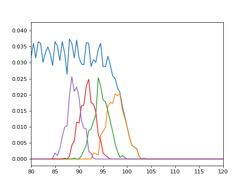

Observables¶
Radial Distribution Functions¶
-
class
pytim.observables.InterRDF(g1, g2, nbins=75, range=(0.0, 15.0), exclusion_block=None, start=None, stop=None, step=None, excluded_dir='z', observable=None, observable2=None, weights=None)¶ Calculates a radial distribution function of some observable from two groups.
The two functions must return an array (of scalars or of vectors) having the same size of the group. The scalar product between the two functions is used to weight the distriution function.

Parameters: - g1 (AtomGroup) – 1st group
- g2 (AtomGroup) – 2nd group
- nbins (int) – number of bins
- exclusion_block (???) –
- start (int) – first frame
- stop (int) – last frame
- step (int) – frame stride
- excluded_dir (char) – project position vectors onto the plane orthogonal to ‘z’,’y’ or ‘z’ (TODO not used here, check & remove)
- observable (Observable) – observable calculated on the atoms in g1
- observable2 (Observable) – observable calculated on the atoms in g2
- weights (array) – weights to be applied to the distribution function (mutually exclusive with observable/observable2)
-
class
pytim.observables.InterRDF2D(g1, g2, nbins=75, range=(0.0, 15.0), exclusion_block=None, start=None, stop=None, step=None, excluded_dir='z', true2D=False, observable=None)¶ Calculates a radial distribution function of some observable from two groups, projected on a plane.
The two functions must return an array (of scalars or of vectors) having the same size of the group. The scalar product between the two functions is used to weight the distriution function.
Parameters: - g1 (AtomGroup) – 1st group
- g2 (AtomGroup) – 2nd group
- nbins (int) – number of bins
- exclusion_block (???) –
- start (int) – first frame
- stop (int) – last frame
- step (int) – frame stride
- excluded_dir (char) – project position vectors onto the plane orthogonal to ‘z’,’y’ or ‘z’ (TODO not used here, check & remove)
- observable (Observable) – observable calculated on the atoms in g1
- observable2 (Observable) – observable calculated on the atoms in g2
- weights (array) – weights to be applied to the distribution function (mutually exclusive with observable/observable2)
Example:
>>> import MDAnalysis as mda >>> import numpy as np >>> import pytim >>> from pytim import * >>> from pytim.datafiles import * >>> >>> u = mda.Universe(WATER_GRO,WATER_XTC) >>> L = np.min(u.dimensions[:3]) >>> oxygens = u.select_atoms("name OW") >>> radii=pytim_data.vdwradii(G43A1_TOP) >>> >>> interface = pytim.ITIM(u,alpha=2.,itim_group=oxygens,max_layers=4,radii_dict=radii,cluster_cut=3.5) >>> >>> for ts in u.trajectory[::50] : ... interface.assign_layers() ... layer=interface.layers('upper',1) ... if ts.frame==0 : ... rdf = observables.InterRDF2D(layer,layer,range=(0.,L/2.),nbins=120) ... rdf.sample(ts) >>> rdf.normalize() >>> rdf.rdf[0]=0.0 >>> np.savetxt('RDF.dat', np.column_stack((rdf.bins,rdf.rdf)))
This results in the following RDF:
(Source code, png, hires.png, pdf)

{kind=link}
{kind=link}
Profiles¶
-
class
pytim.observables.Profile(group, direction='z', observable=None, interface=None, center_group=None)¶ Calculates the profile (normal, or intrinsic) of a given observable across the simulation box
Parameters: - group (AtomGroup) – calculate the profile based on this group
- direction (str) – ‘x’,’y’, or ‘z’ : calculate the profile along this direction
- observable (Observable) – calculate the profile of this quantity. If None is supplied, it defaults to the number density
- interface (ITIM) – if provided, calculate the intrinsic profile with respect to the first layers
- center_group (AtomGroup) – if interface is not provided, this optional group can be supplied to center the system
Example:
>>> u = mda.Universe(WATER_GRO,WATER_XTC) >>> oxygens = u.select_atoms("name OW") >>> radii=pytim_data.vdwradii(G43A1_TOP) >>> >>> obs = observables.Number() >>> profile = observables.Profile(group=oxygens,observable=obs) >>> >>> interface = pytim.ITIM(u, alpha=2.0, max_layers=1,cluster_cut=3.5) >>> >>> for ts in u.trajectory[:]: ... interface.center(oxygens) ... profile.sample() >>> >>> bins, avg = profile.profile(binwidth=1.0) >>> np.savetxt('profile.dat',list(zip(bins,avg)))
This results in the following profile:
(Source code, png, hires.png, pdf)

{kind=link}
{kind=link}
Misc¶
-
class
pytim.observables.LayerTriangulation(interface, layer=1, return_triangulation=True, return_statistics=True)¶ Computes the triangulation of the surface and some associated quantities :param Universe universe: the MDAnalysis universe :param ITIM interface: compute the triangulation with respect to this interface :param int layer: (default: 1) compute the triangulation with respect to this layer of the interface :param bool return_triangulation: (default: True) return the Delaunay triangulation used for the interpolation :param bool return_statistics: (default: True) return the Delaunay triangulation used for the interpolation
Returns Observable LayerTriangulation: -
compute(input=None)¶ Compute the triangulation of a layer on both sides of the interface
Example:
>>> interface = pytim.ITIM(mda.Universe(WATER_GRO)) >>> surface = observables.LayerTriangulation(interface,return_triangulation=False) >>> interface.assign_layers() >>> stats = surface.compute() >>> print ("Surface= {:04.1f} A^2".format(stats[0])) Surface= 7317.1 A^2
-
-
class
pytim.observables.IntrinsicDistance(interface, layer=1, return_triangulation=False)¶ - Initialize the intrinsic distance calculation
param Universe universe: the MDAnalysis universe param ITIM interface: compute the intrinsic distance with respect to this interface param int layer: (default: 1) compute the intrinsic distance with respect to this layer of the interface param bool return_triangulation: (default: False) return the Delaunay triangulation used for the interpolation
Example: TODO
-
compute(input)¶ Compute the intrinsic distance of a set of points from the first layers :param ndarray positions: compute the intrinsic distance for this set of points
Example: TODO
Basic Observables¶
-
class
pytim.observables.Number¶ The number of atoms
-
compute(inp)¶ Compute the observable
Parameters: inp (AtomGroup) – the input atom group Returns: one, for each atom in the group
-
-
class
pytim.observables.MolecularOrientation(universe, options='')¶ Molecular orientation vector of a set of molecules
-
compute(inp)¶ Compute the observable
Parameters: inp (variable) – an AtomGroup or a ResidueGroup TODO: document and check if the function needs to be modified
-
-
class
pytim.observables.Orientation¶ Orientation of a group of points
Parameters: options (str) – optional string. If normal is passed, the orientation of the normal vectors is computed This observable does not take into account boudary conditions. See
MolecularOrientation-
compute(pos)¶ Compute the observable
Parameters: inp (ndarray) – the input atom group. The length be a multiple of three Returns: the orientation vectors For each triplet of positions A1,A2,A3, computes the unit vector beteeen A2-A1 and A3-A1 or, if the option ‘normal’ is passed at initialization, the unit vector normal to the plane spanned by the three vectors
-